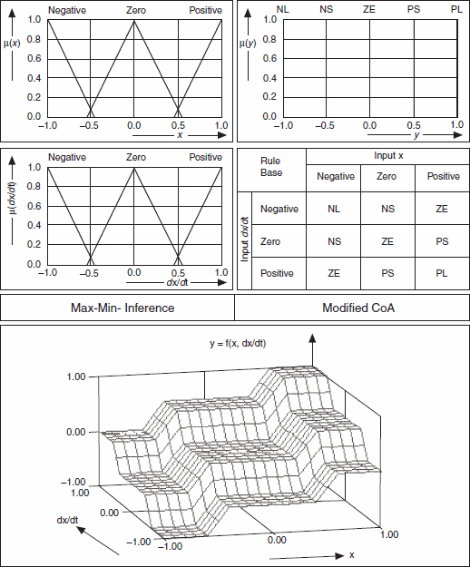

In principle, the conclusions about I/O characteristics for single-input fuzzy controllers also are valid for controllers with two or more inputs. However, using the AND (Minimum) antecedent connective to combine the different input conditions raises an additional nonlinear effect. The fuzzy controller considers the antecedent of the rule with the lowest degree of truth as shown in the Reproducing a Given I/O Characteristic example.
The following image shows the I/O characteristic field for a dual-input fuzzy controller.
Because the AND (Minimum) antecedent connective is nonlinear, the characteristic field is not exactly linear despite the membership functions that overlap entirely for both input variables. Non-overlapping membership functions yield a stepped characteristic field with constant planes, as shown in the following image.
